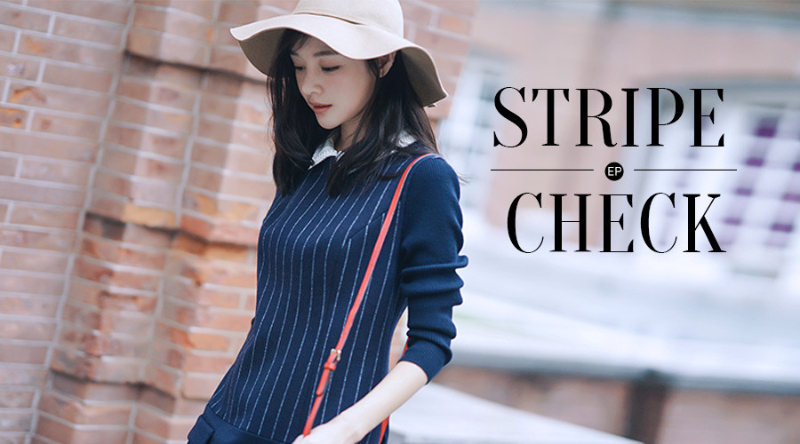
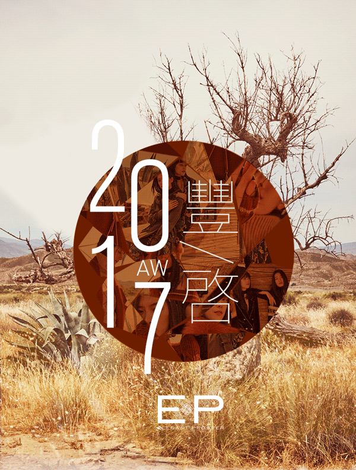

红颜悦色，如沐爱河
16.11.07
EP 雅莹2017“豐•啓”秋冬发布会–中国国际服装周闭幕大秀全纪录！
17.04.06
2017年4月1日晚，EP雅莹带着近三十年的美学积淀与蓄力，再掀波澜，红动乌镇，揭开品牌雅致新啓的全新风貌。
EP雅莹2017秋冬系列发布秀 即将揭幕
17.03.24
新年新时尚，条纹浪潮再度来袭你可否准备就绪？
17.02.02
条纹，一个曾让全世界为之疯狂的元素。如今，依旧是一个不老时尚的热捧话题。 在秀场、在时装周、在街头，条纹始终都是时尚达人的心头好。 那今天，就在充满新年红的热闹气氛中，让我们一起感受这股屹立不倒的时尚清流。 眼看去年的条纹风潮还没散尽 …
姐（Ma），母亲节快乐！
18.05.11
每个女孩子身上或多或少都有自己母亲的影子， 妈妈的习惯风格和好衣品会不知不觉渗入你的生活， 不管你们相似与否，妈妈和女儿， 总是这个世界上最了解彼此且亲密无间的好闺蜜！ — 永不凋零的姐妹花 一样的长发，一样的温婉，一样的热爱生活。 …
深秋扮美御寒指南 ，“大衣”博物馆
16.10.17
一阵秋雨过后 天气骤凉 翻箱倒柜找出去年的衣服 却发现没了新鲜感 马上添置几件换季大衣吧 01 工作日 军装风的双排扣 以及利落的线条 妥妥打造女强人 EGBIW8118aY 02 郊游 周末来一场户外郊游吧 穿上毫无束缚感的棒球大衣 …
EP红，温暖澎湃再次遇见
16.10.31
EP雅莹Jewelry | 不入园林，怎知春色如许
18.05.10
— 懂得安享静好之美的人，很少不爱珠宝。 就像认真体会过生命之后，很难对传统文化无感。 成长是一件循序渐进的事情， 我们终将离开表面的五光十色， 像关注花朵树木的根茎一样，去探究本质与内核， 去了解表面繁华背后的百转千回。 30岁的EP雅莹 …

入秋刮起复古风，条纹格纹潮搭新LOOK
16.09.23
无论格纹还是条纹，衣服上没个纹路， 你敢说自己会穿？ 放眼好衣品的街拍大神或是时尚博主， 纹路在他们的搭配中永远都不会被遗弃， 无论是条纹还是格纹， 都能被他们演绎的复古又chic。 条纹，无疑是时尚圈中生命力最强的元素之一。 它简单而个 …
因爱·闪光 | 赵子琪：感谢你，和幸福一起到来
18.05.11
你说你早忘了十级疼痛的剧烈 却清晰记得我来这世间的第一声啼哭 你说你早记不得那些无眠的夜晚 那些疲惫和不知所措了 但我学步时摇摇晃晃的样子 却近的像在昨日 曾经小小的我 如今有了一个和你同样的名字——“妈妈” 才懂得“母亲”，这个称呼的重量 …

EP 2017 A/W 大片：焕然 豐•啓
17.07.17
焕然之豐，雅致新啓
EP 2017 春夏大片：自在 · 新我
17.01.17